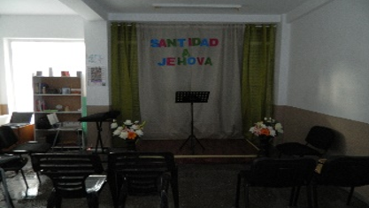
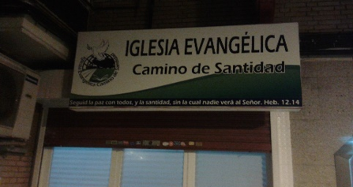
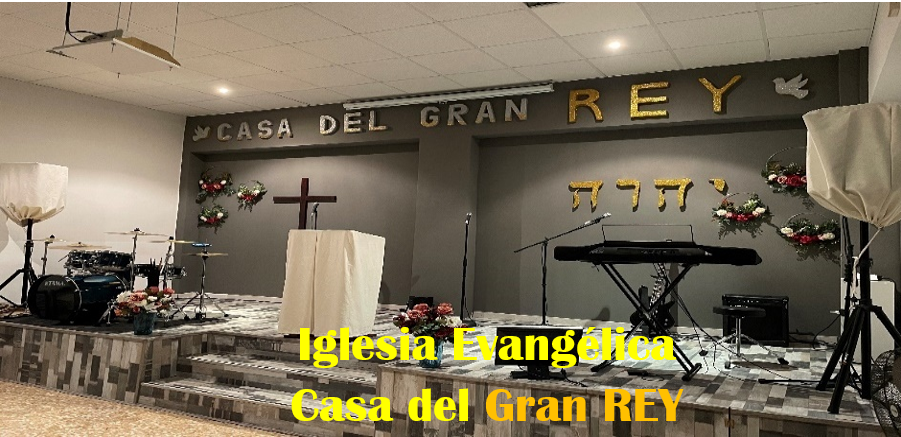

Historia de la Iglesia de Cristo
Los pasos que ha dado la iglesia de Cristo a lo largo de más de 2000 años.
Los Comienzos
Algunos dicen que la iglesia comenzó con Abraham, otros con Israel, otros con los discípulos, y otros la sitúan el día de Pentecostés. Esta historia tiene más de 2000 años y todavía sigue escribiéndose.
Un Libro sin "Amén"
Los libros del N.T. terminan con amén, pero Hechos no. Porque todavía se sigue escribiendo la historia de la iglesia de Cristo.
Hechos 28:30-31Vidas Entregadas
El primer mártir fue Esteban, luego el apóstol Jacobo. Desde entonces, muchos han dado su vida por el Señor antes que negarle.
Hechos 6:1-7 · 12:1-5Historia de Nuestra Iglesia
El camino que Dios trazó para formar Casa del Gran REY.
Entregando la Vida al Señor
Fui un arduo trabajador en la iglesia Camino a Emaús II y buscador de la presencia del Señor. Eso me ayudó a asentar bases para los días difíciles.
Hermanos que Veían un Pastor
Los hermanos me llamaban pastor. Se soñaban conmigo pastoreando. El pastor pensó "entregarme la congregación", pero no era el tiempo.
No Era el Tiempo de Dios
Los hermanos sin querer me llamaban pastor. El pastor propuso darnos una obra, pero nada pasó.
"En el Señor todo tiene su tiempo"Un Sueño de Dios
Dios reveló a través de un sueño lo que vendría. El llamado pastoral estaba confirmado. Era tiempo de dar un paso de fe y obedecer.


Nace la Iglesia
Arreglamos el local e hicimos un culto de inauguración en 2016. La iglesia tenía por nombre Iglesia Evangélica Camino de Santidad.

PresenteCreciendo para Su Gloria
Un local 3x más amplio, cuadruplicamos los hermanos, nuevos equipos. La misma visión del primer día, más experiencia en el ministerio junto a la familia.
Nuestros Pastores
Carlos Pineda e Isabel Riopedre
Pastores Principales
"Servimos con amor y dedicación a nuestra comunidad en Leganés, buscando siempre que el maravilloso amor de Cristo Jesús sea evidente entre nosotros."
Nuestra congregación se caracteriza por ser una familia unida, donde se fomenta la solidaridad y se enseña la palabra de Dios con integridad.
Una Iglesia Familiar
Los testimonios de nuestros miembros confirman nuestro mayor deseo: ser una iglesia auténtica.
"Le doy gloria a Dios pertenecer a Casa del Gran REY. Una congregación de cero chisme, donde el maravilloso amor de Cristo Jesús es evidente entre nosotros."
"Iglesia con mucho amor para dar. Ven, sé parte de ella, pero sobre todo que Jesucristo sea el centro de tu vida."
¿Deseas visitarnos?
Te invitamos a ser parte de nuestra familia y experimentar el amor de Dios en cada uno de nuestros servicios.